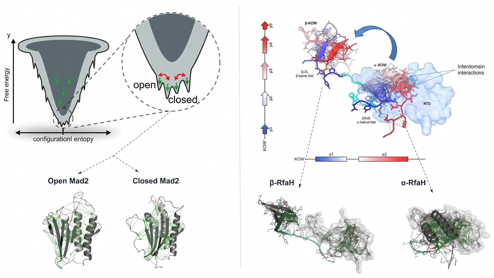
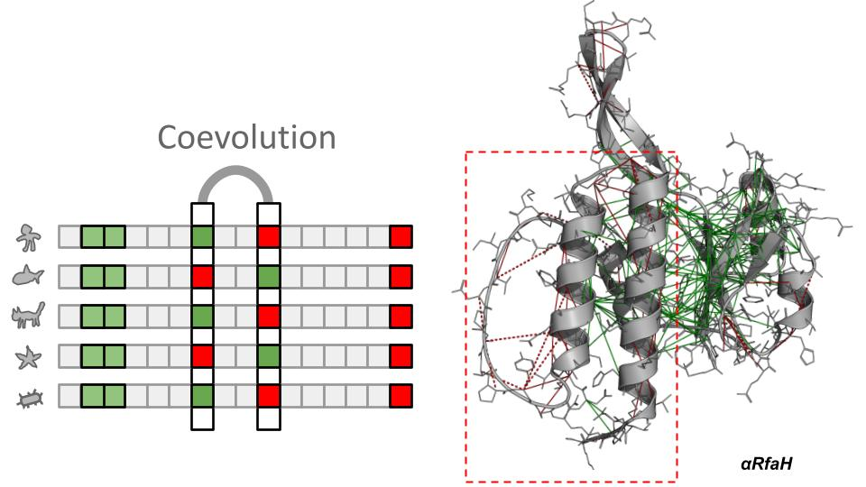

Computational Biophysics · Protein Energy Landscapes · Evolutionary Biophysics · Molecular Simulation
Jorge F.
González Higueras, PhD
PhD in Biological and Medical Engineering, Pontificia Universidad Católica de Chile (2026). I study how proteins encode large-scale structural transitions through energetic frustration — at the intersection of coarse-grained simulation, evolutionary biophysics, and AI-driven protein design.
Research
Where energy meets evolution

Contact-based residue-level frustration analysis to decode how metamorphic proteins encode fold-switching. Primary system: RfaH from E. coli.
Conformational ensemble generation in proteins with heterogeneous landscapes — from dual-basin fold-switchers to IDPs. Collaboration with the Camiloni group (MultiEGO, Univ. Milan).

Connecting frustration patterns to coevolutionary signals across protein families. How do functional sites emerge as frustrated regions? Phylogenetic and statistical coupling analysis at BSC.
Generative deep learning for protein binder design, structure prediction, and functional annotation. 2nd place at AI4PD hackathon for AI-driven binder design against RfaH.
Publications
Peer-reviewed work
News & Updates
Recent highlights
Technical Skills
Tools of the trade
- GROMACS — extensive, 7+ yrs
- AMBER AmberTools / AmberAPI
- OpenMM · OpenSMOG · OpenAWSEM
- SMOG2 · dual-basin · Go models
- MDAnalysis · MDTraj · Packmol
- Gaussian · ORCA (QM/MM)
- FrustratometeR — PhD core tool (R package)
- Frustratometer Python API
- Potts models · coevolution
- FrustraEvo framework (BSC)
- MultiEGO (Camiloni lab)
- Phylogenetic structural analysis
- AlphaFold2/3 · RosettaFold · ESMFold
- RFDiffusion · ProteinMPNN · ESM2
- Rosetta suite · C++ development
- PyTorch · scikit-learn
- Graph neural networks
- Python — advanced (NumPy, Pandas, PyTorch, SciPy)
- R — proficient
- C++ — working knowledge
- Bash · Linux · GPU optimization
- HPC clusters · SSH · compilation
- Napari · Jupyter
- Spanish — native
- English — professional / upper-intermediate (TOEIC certified)
Full Academic Record
Complete trajectory
A comprehensive registry of all academic activities, certifications, training, grants, and recognition — the full scientific journey, nothing discarded.
Contact
Let's connect
Open to postdoctoral collaborations in computational biophysics, protein energy landscapes, and evolutionary structural biology.